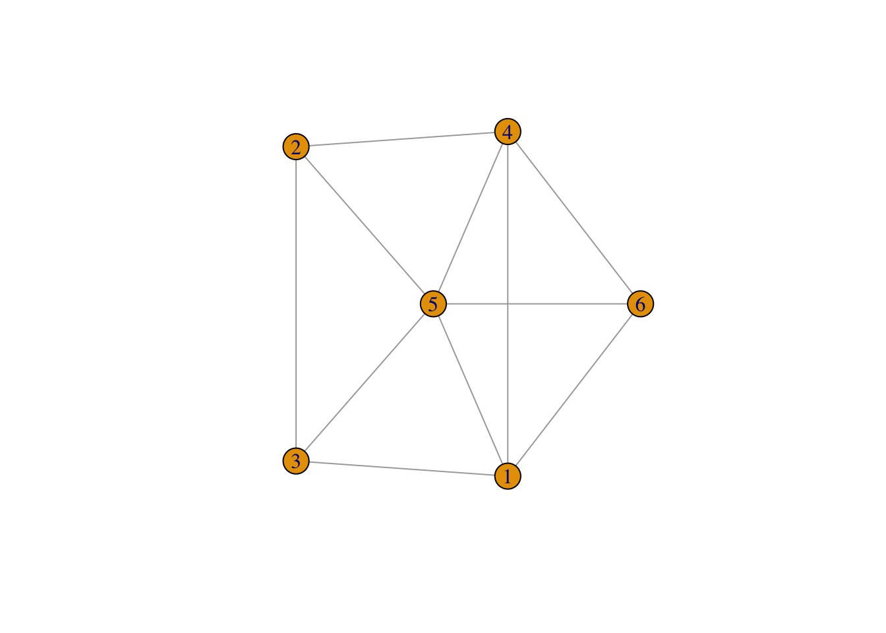
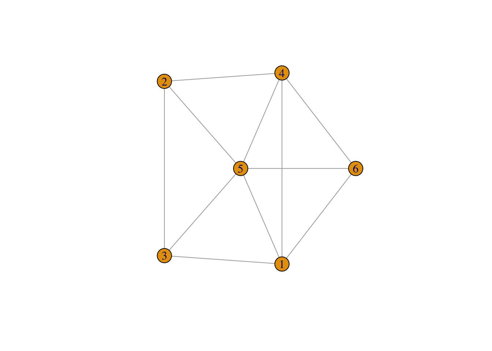
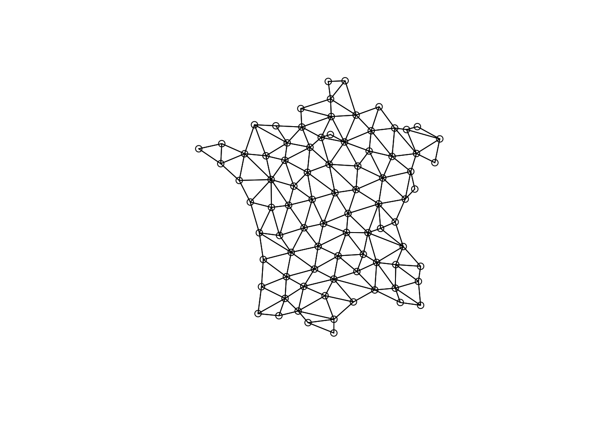
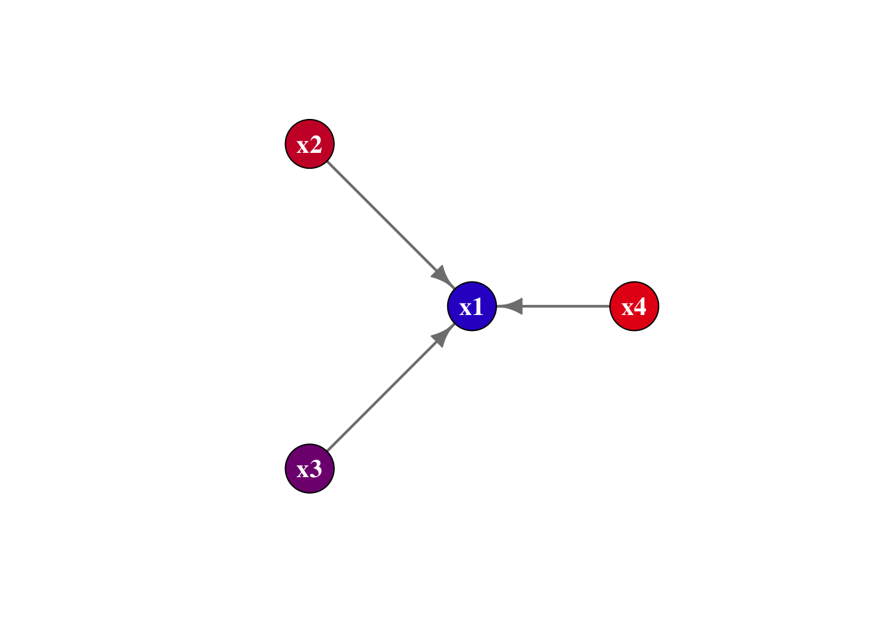
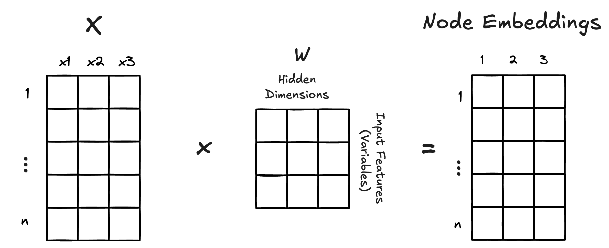
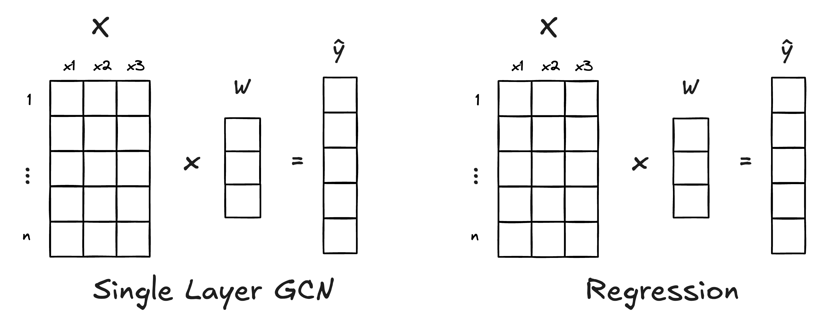

Code
library(igraph)
set.seed(0)
g <- sample_gnm(6, 11)
plot(g)
Spatial lags all the way down
I’ve been saying this for years and I’ll say it again:
Spatial data is just a graph
I’ve been diving deep into Graph Neural Networks (GNN) to understand how we can use them for “GeoAI” and spatial machine learning.
This post is going to build the intuition for why Graph Neural Networks are perfect for spatial data (non-raster).
A graph is defined as a set nodes connected by edges. Nodes can be thought of as “things” or “entities” and then the connections between them are the edges. The nodes can be thought of as rows in a dataset. Then the edges are an additional “edge list” that informs us of connectivity between them.
library(igraph)
set.seed(0)
g <- sample_gnm(6, 11)
plot(g)
When we do spatial statistics we need to create the concept of a neighborhood. For example with polygons, we typically use contiguity to define our neighborhood.
If we identify neighborhoods based on contiguity we then identify our neighbors based on that which we use to create a spatial weights matrix.
Characteristics of weights list object:
Neighbour list object:
Number of regions: 85
Number of nonzero links: 420
Percentage nonzero weights: 5.813149
Average number of links: 4.941176
Weights style: W
Weights constants summary:
n nn S0 S1 S2
W 85 7225 85 37.2761 347.6683The listw object from spdep is the representation of the spatial weights matrix.
The spatial weights matrix is a sparse matrix. For every location in our data set there is a row and a column—n x n matrix. A non-zero value in a row indicates a neighbor. The connections between locations (or the spatial weights matrix (SWM)) can be viewed as a network.
plot(nb, guerry$geometry)
As you can see a spatial weight matrix is a graph!
To be exceptionally pedantic (as this whole post is) a SWM is a graph \(G = (V , E)\) where each node, \(v_i\), is a location in a set of nodes \((i = 1, ..., n)\). The edges in the graph \(e_{ij} = (v_i, v_j, w_{ij})\) are the spatial weights between neighbors.
Okay, moving on.
The crux of spatial econometrics is the spatial lag. For all intents and purposes, the spatial lag is “just” an average of a variable \(X\) over a neighborhood.
See my YouTube video on this in more depth.
library(dplyr)
library(sfdep)
library(ggplot2)
library(patchwork)
df <- guerry_nb |>
mutate(crime_lag = st_lag(crime_pers, nb, wt))
obs <- ggplot(df) +
geom_sf(aes(fill = crime_pers)) +
scale_fill_viridis_c() +
theme_void() +
theme(legend.position = "none") +
labs(title = "Observed")
lagged <- ggplot(df) +
geom_sf(aes(fill = crime_lag)) +
scale_fill_viridis_c() +
theme_void() +
theme(legend.position = "none") +
labs(title = "Spatial Lag")
obs | lagged
👉🏼 The spatial lag is a way to aggregate information about a location’s neighborhood. 👈🏼
GNNs are based on the concept of message passing. Message passing is how we propagate information from a node’s neighbors (edge connections) to the node itself.
# Create a simple 4-node network: central node with 3 neighbors
edges <- matrix(c(
2, 1, # node 2 -> central node
3, 1, # node 3 -> central node
4, 1 # node 4 -> central node
), ncol = 2, byrow = TRUE)
g <- graph_from_edgelist(edges, directed = TRUE)
# Assign values to each node
node_values <- c(0.2, 0.8, 0.5, 0.9)
# Create layout: central node in middle, others in circle
layout <- matrix(c(
0, 0, # central node
-1, 1, # node 2
-1, -1, # node 3
1, 0 # node 4
), ncol = 2, byrow = TRUE)
# Plot
plot(g,
vertex.size = 30,
vertex.color = rgb(node_values, 0, 1 - node_values),
vertex.label = paste0("x", 1:4),
vertex.label.cex = 1.2,
vertex.label.font = 2,
vertex.label.color = "white",
edge.width = 2,
edge.arrow.size = 1,
edge.color = "gray50",
layout = layout,
)
In this graph, we have nodes x1 through x4. The nodes x2, x3, and x4 are “passing” their message to the focal node. These node values have to be summarized in some way. This is typically called an aggregation function. The most common one? The average!
The spatial lag operator is message passing! This means that most of our spatial econometric models—spatial lag and spatial error models and many others are actually utilizing graph message passing in some way.
The most common type of GNN is the Graph Convolution Network (GCN).
The term “Convolution” is often used for deep learning models that perform image detection—typically a Convolution Neural Network. These apply a “filter” over each pixel in an image and typically take the weighted sum (or average) of the neighboring pixels to summarize nearby pixels.
This is literally the same thing! Except pixels have a fixed grid whereas we’re generalizing message passing and spatial lags to any network with a node and neighbors.
The GCN is defined from a famous paper Semi-Supervised Classification with Graph Convolutional Networks as:
\[ \mathbf{H}^{(k)} = \sigma\left(\tilde{\mathbf{A}}\mathbf{H}^{(k-1)}\mathbf{W}^{(k)}\right) \]
The single layer version of this can be written as:
\[ \mathbf{H} = \sigma\left(\tilde{\mathbf{A}} \mathbf{X} \mathbf{W}\right) \]
This is actually a lot less scary once you think of everything as a spatial lag and locations on a map. Let’s start with \(\tilde{A}\).
\[ \tilde{\mathbf{A}} = (\mathbf{D} + \mathbf{I})^{-\frac{1}{2}}(\mathbf{I} + \mathbf{A})(\mathbf{D} + \mathbf{I})^{-\frac{1}{2}} \]
This equation is saying that we have an adjacency matrix \(A\) which is “normalized” (scaled by) the degree matrix \(D\). The degree matrix counts the number of neighbors per location.
The matrix D is equivalent to spdep::card(nb).
The biggest difference here between spatial econometrics and the GCN is that the adjacency matrix \(A\) must have “self-loops.” The \(I + A\) is equivalent to spdep::include.self(). This ensures that the neighborhood includes the observed location.
\(I\) is called the “identity matrix.” It’s literally just the diagonal of a matrix set to 1.
The point of this matrix is to ensure that when we multiply values together the scale is roughly maintained and that the contribution from neighbors and the focal node (location) are roughly balanced.
The strength of neural networks is their ability to learn representations of our variables—typically using a higher dimension representation. For example, taking 3 variables and mapping them onto, say, 3 “hidden” dimension would create a total of 9 values of \(W\) that would be learned on. These embeddings can capture more patterns than might be possible from the values themselves.

The rows of \(W\) correspond to the input variables. The columns indicate the “hidden dimensions.” Multiplying by the \(W\) creates “node embeddings.” The more hidden dimensions the more embedding variables there are.
The matrix \(W\) is learnable which means that the network adjusts the values to best predict the target variable \(Y\). The \(W\) is akin to the \(\beta\) coefficients of a regression model.
In a regression we have a \(\beta\) for each variable in our model. If we have 3 variables in our \(X\) matrix (the predictor variables) and we specify that our single layer model only have 1 hidden dimension then the \(W\) only has 3 values—one per variable. This is essentially a learned version of the \(\beta\)!

In this example we only have 1 hidden dimension which means we only have 1 weight per variable—akin to the actual \(\beta\) of a linear regression. Now, this is actually ignoring the message passing aspect of this. To be a GCN we need to calculate the spatial lag of each X before we multiply by the learned weights. The actual GCN looks like

For the spatial econometricians in the house—this might look like a spatially lagged X model without the original X matrix.
See Spatial Data Science ch 17 on econometric models for a fairly terse discussion on these models by Bivand and Pebesma.
Let’s first create a spatially lagged X model by hand:
# Create neighborhood structure with self-loops
nb <- include.self(guerry_nb$nb)
lw <- spdep::nb2listw(nb, style = "W")
# Prepare feature matrix
x <- guerry |>
sf::st_drop_geometry() |>
select(commerce, crime_pers, donations) |>
scale()
# calculate spatial lags for each variable
sp_lags <- lag.listw(lw, x)
# define y variable
y <- guerry$instruction
# fit slx model
slx_mod <- lm(y ~ sp_lags)
summary(slx_mod)
Call:
lm(formula = y ~ sp_lags)
Residuals:
Min 1Q Median 3Q Max
-45.22 -11.60 0.38 11.55 35.09
Coefficients:
Estimate Std. Error t value Pr(>|t|)
(Intercept) 43.64726 1.93599 22.545 < 2e-16 ***
sp_lags1 24.27125 2.92102 8.309 1.84e-12 ***
sp_lags2 -1.06314 3.23981 -0.328 0.744
sp_lags3 0.09644 3.84151 0.025 0.980
---
Signif. codes: 0 '***' 0.001 '**' 0.01 '*' 0.05 '.' 0.1 ' ' 1
Residual standard error: 17.75 on 81 degrees of freedom
Multiple R-squared: 0.5086, Adjusted R-squared: 0.4904
F-statistic: 27.95 on 3 and 81 DF, p-value: 1.663e-12If we treat the regression coefficients as our \(W\) matrix in a GCN layer we can get the exact same values from a GCN layer!
Here we’re using my {torchgnn} package to create a layer_gcn().
torchgnn is not yet on CRAN. You can install it with pak::pak("josiahparry/torchgnn").
library(torch)
library(torchgnn)
# Create sparse adjacency matrix for GCN
adj <- adj_from_edgelist(
rep.int(seq_along(nb), lengths(nb)),
unlist(nb),
unlist(lw$weights),
# already handled by spdep
symmetric = FALSE
)$coalesce()
# convert X to a tensor for torch
X <- torch_tensor(x)
# don't modify the adjacency matrix
layer <- layer_gcn(3, 1, normalize = FALSE)
# set the weights to the same as a the regression
with_no_grad({
layer$weight$copy_(torch_tensor(matrix(coef(slx_mod)[-1], nrow = 3)))
})
# set the bias to the intercept
with_no_grad({
layer$bias$copy_(torch_tensor(coef(slx_mod)[1]))
})In the above code check we created a single GCN layer and manually set the bias (equivalent to an intercept term) and the weights. Typically these would be learned by a training loop. But for the sake of education, we’re setting them to be the equivalent to our linear regression.
Next we apply the layer to the \(X\) and \(A\) matrices to get our \(\hat{Y}\) predictions.
tibble::tibble(
gcn_preds = as.numeric(layer(X, adj)),
slx_preds = unname(slx_mod$fitted.values)
)# A tibble: 85 × 2
gcn_preds slx_preds
<dbl> <dbl>
1 47.9 47.9
2 18.1 18.1
3 64.9 64.9
4 46.5 46.5
5 52.0 52.0
6 49.4 49.4
7 6.78 6.78
8 45.5 45.5
9 10.9 10.9
10 44.1 44.1
# ℹ 75 more rowsIn the above we showed that the GCN layer is literally just a fancy regression model using the spatial lags of our input variables. However, we assumed that there was not any activation function.
For fuller examples we can fit a GCN with multiple hidden layers as well as an additional activation or loss functions. These GCN models can generalize well to classification or regression.